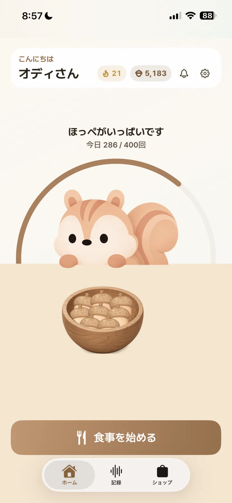
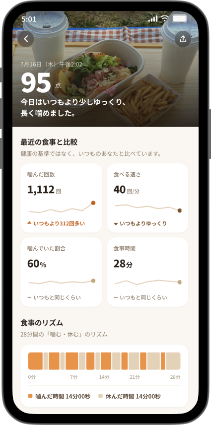
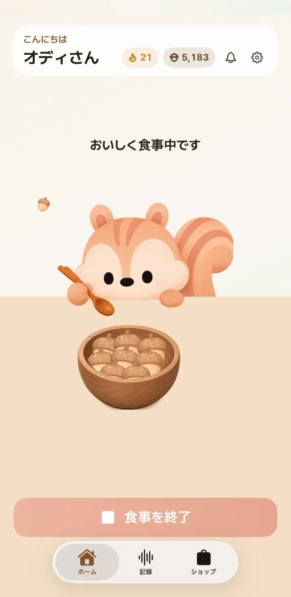
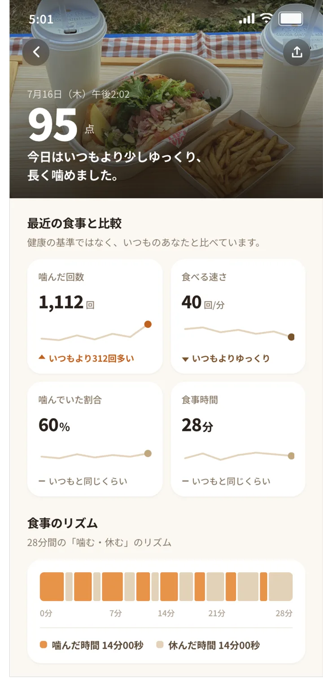

STEP 1
食事の準備
AirPodsをつけて準備
モーションセンサーに対応したAirPodsを接続し、ホーム画面の「食事を始める」をタップします。

食べる速さとリズムを確認。噛む動きを検知するたび、オディもどんぐりを食べます。

対応するAirPodsをつけたら、いつもの食事を始めるだけ。食べ方の記録をあとから確認できます。

モーションセンサーに対応したAirPodsを接続し、ホーム画面の「食事を始める」をタップします。

食事中の動きから、噛む回数と咀嚼テンポの目安を記録。画面を閉じても測定を続けます。

食事時間、噛んだ回数、食べる速さ、「噛む・休む」のリズムを、いつもの自分と比べて確認できます。

最新情報をチェック